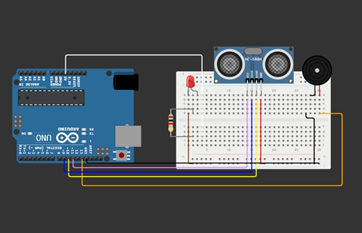
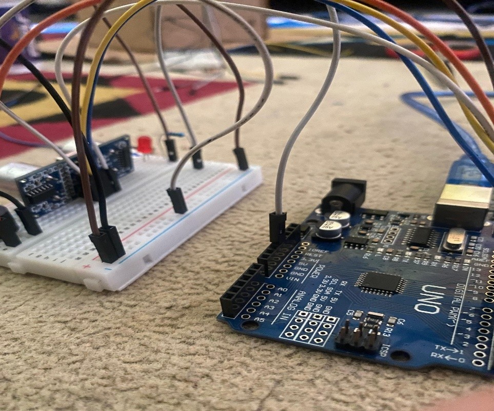
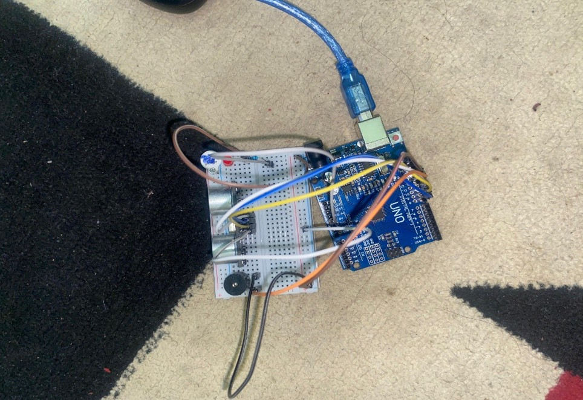

Projek ini menggunakan sensor ultrasonik, mikrokontroler, buzzer, dan LED untuk mendeteksi gerakan. Jika ada objek terdeteksi, sistem akan menyalakan alarm dan indikator. Semua komponen dirakit di breadboard/PCB dengan kode sederhana untuk mengontrol jarak dan alarm.dan Sistem dicoding menggunakan Software Arduino IDE